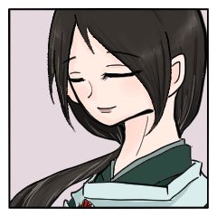

GM
初めにそれぞれのPC紹介をお願いしましょうか。
GM
キャラクターシートを公開してから自己紹介ですね。
《終末の獣》
https://character-sheets.appspot.com/shinobigami/edit.html?key=ahVzfmNoYXJhY3Rlci1zaGVldHMtbXByFwsSDUNoYXJhY3RlckRhdGEY4qrHrgMM
《終末の獣》
あるのは己の肉体と、忍びとしての技芸、そして心のみ。
《終末の獣》
当て所なく、刺客を切り払うばかりの日々を生きる。
《終末の獣》
狗の面は決して外さす、獣を降ろし、人ならざる術にて敵を砕く。
GM
ありがとうございます。PC1の導入はこちらですね。
GM
■PC① 推奨：隠忍の血統orハグレモノ、男性
・使命：【心に決めた伴侶と共に生きる】
・導入：
あなたは終末の獣と呼ばれる妖魔らしい。
世界の終わりを迎え入れる獣として、人間に狩られようとしていた。
傷付き、逃げ惑う中、あなたが見つけたのはPC②。
儀式の生贄にされようとしていた彼女を救ったあなたは、
彼女と共に逃亡する生活を送ることにした。
彼女と静かに暮らすことが出来るのであれば、それ以外はなにも要らない。
GM
■PC② 推奨：比良坂機関、女性
・使命：【愛する人と幸せな生涯を送る】
・導入：
全てを、運命だと受け入れる覚悟だった。
あの満月の夜の儀式。
月明かりの下で命を散らすはずだった貴方は、一頭の獣にさらわれ、逃亡することになった。
獣との生活の中、覚悟は揺らぐ。
この生活の先に幸せがあるのなら、それもいい。
境 清花
http://character-sheets.appspot.com/shinobigami/edit.html?key=ahVzfmNoYXJhY3Rlci1zaGVldHMtbXByFwsSDUNoYXJhY3RlckRhdGEYl4eopgMM
境 清花
清花（きよか）と申します。年は拾八になったばかりの若輩でございます。
境 清花
境のお家に嫁いで、先日二年ほどになりました。
境 清花
幼年より、忍びの技とともに、良き女性として生きるべく多くを学んでまいりました。
境 清花
至らぬ身ではございます。それでも、仁悟さんがわたくしの命をお望みになるのならばと思ってまいりましたのですが……
境 清花
今は……少しばかり。揺らいでも、おりますね。
境 清花
良き妻であろうと、思って……おりましたのに。
GM
良き妻として努めていらしたご様子の清花さん。
GM
■PC③ 推奨：鞍馬神流、男性
・使命：【PC②を殺す】
・導入：
ずっと続くと思っていた幸せな日々。
終わりを告げたのは一つの使命。
【妻を殺せ】
儀式の生贄となった妻は、全てを受け入れた顔であなたを見る。
手にした神刀は重く、あなたは手を下せなかった。
運命は迷いを見逃さず、妻は獣に連れ去られた。
境 仁悟
https://character-sheets.appspot.com/shinobigami/edit.html?key=ahVzfmNoYXJhY3Rlci1zaGVldHMtbXByFwsSDUNoYXJhY3RlckRhdGEYqe3BrgMM
境 仁悟
二年前に妻を貰い、よく尽くしてくれている。
境 仁悟
俺は無口で武骨者であるから、迷惑をかけることも多かった。
GM
控えめながらかわいらしい妻の隣、質実剛健を形にしたような旦那さま。
GM
■PC④ 推奨：戦国編流派、長命
・使命：【終末の獣の終わりを見届ける】
・導入：
あなたは、『化粧応神』と呼ばれる刀を鍛え上げた鍛治師である。
『化粧応神』とは、終末の獣を退治せんがため、
神の命によってあなたが鍛え上げた神刀だ。
獣と刀の物語を見届けるため、あなたは生き続けることとなった。
ようやくその旅路が終わりを迎えようとしている。
※PC④は長命の【背景】を獲得する。
それとは別に、通常通り【背景】を取得して構わない。
鴟尾 鴞字郎
http://character-sheets.appspot.com/shinobigami/edit.html?key=ahVzfmNoYXJhY3Rlci1zaGVldHMtbXByFwsSDUNoYXJhY3RlckRhdGEY6oWdpgMM
鴟尾 鴞字郎
鴟尾 鴞字郎（しびの きょうじろう）
鴟尾 鴞字郎
武器職人だ。『鴞字郎』とでも呼んでくれ。
鴟尾 鴞字郎
おいらが作った武器にゃ、だいたいそんな感じの名前が彫ってあらあな。
鴟尾 鴞字郎
刀だけじゃねえぞ。矢から銃から、果てはミサイルに至るまでなんでもござれだ。
鴟尾 鴞字郎
一応、こっちの業界人だ。元を辿りゃあ根来衆の所属になる。
鴟尾 鴞字郎
……が、年齢を聞くのは野暮ってぇもんだ
鴟尾 鴞字郎
知りすぎない程度がちょうどいい。そうだろ？
鴟尾 鴞字郎
ほどほどに仲良く頼むよ。よろしくな！
GM
かわいらしい外見でいて大変達観していらっしゃる。
GM
傾奇者の刀鍛冶はいかな結末を見届けるのでしょうね？
GM
さて、では、シノビガミセッション『化粧応神』。
GM
儀式の夜、《終末の獣》が現れるまでの清花と仁悟の会話のシーン。
その後、逃げる《終末の獣》と追う忍、それを眺めるか共に追うかする鴞字郎のシーン。
そして、儀式の斎場に《終末の獣》が現れて、仁悟から清花をかっさらうシーン。
GM
みたいな３シーン構成で考えてます。
なんかこういうシーンやりたいとかあれば入れますがどうでしょう。
GM
突然告げられた使命のまま、二人は儀式の斎場にいる。
GM
他には誰もおらず、焚かれた篝火が、その時が訪れるのを待っていた。

境 清花
淡い夜風に、さらさらと黒髪が揺れている。
境 仁悟
儀式への覚悟を決めてそこにいる女を無言のまま凝視する。
GM
これから手折られることの決まっている、清らかな花の姿。
境 仁悟
そこには寸分の迷いもなく、波も感じられない。
境 仁悟
むしろそのか細さを、可憐さを際立たせるように思え、
境 仁悟
それを一太刀のもとに切り捨てねばならぬ己に課せられた使命を顧みさせる。
境 仁悟
情けない夫に嫁いだと嘆かれやしないかとか、
境 仁悟
そんなことを気にする己をなお羞じる気持ちが湧いてくる。
境 清花
「残される者がつらいのが、世の習いでございます」
境 清花
「……わたくしは、良い妻でしたでしょうか」
境 仁悟
「どこを探しても、お前のような女はいない」
境 清花
「……そう言っていただけるのなら、それ以上のことはございません」
境 仁悟
「…はじめて会った時、こんな男と添うのかと思ったはずだ」
境 仁悟
男が身動き一つせず、思い出話を舌に乗せたのは、
境 仁悟
何もかもを先延ばしにしたい気持ちが故だった。
境 清花
「……どうぞ、思い出の中にだけ置いてくださいまし」
境 仁悟
伏せられたかんばせをわずかな間だけ、それでも名残惜しく見つめて、
GM
清花の瞳に映るものは、夜空に煌々と輝く満月。
GM
溢れ出で失われるいのちを、あなたはしっかりと感じる。
境 清花
熱と冷たさとを同時に感じながら、月鏡を見る。
境 清花
旨に浮かぶ過去の思い出もまた、美しく――そしてもはや、届かない。
GM
鴞字郎さんは……この場合獣を追いかけますか？
GM
暗い闇の中でも、不自然に色が違う。まるで合成のような景色の中にあなたはいる。
《終末の獣》
――《終末の獣》。それが俺の呼び名。
《終末の獣》
投げ交わされる刃を避け、打ち払い、木陰から木陰へ一呼吸を求め。
GM
あなたを見つめる忍たちの瞳の奥には、それらの強い感情が滲む。
《終末の獣》
振るわれる刃に乗せられた感情が、打ち合わせた白刃を伝わり染み入る。
《終末の獣》
手にした刀は酷く毀れて、追手のそれに持ち代える。じっとりと、冷たい汗に濡れた柄頭。
《終末の獣》
奪った刀に残る怨讐か、閃いた白刃を前に容易く折れ、
鴟尾 鴞字郎
その狩りを高くから見下ろす、鴟鴞のごとき影。
鴟尾 鴞字郎
追手の加勢はせず。だが終末の獣を助くこともせず。
鴟尾 鴞字郎
血しぶき舞おうとも、眉の一つも動かない。
鴟尾 鴞字郎
「そら、そこだ。囲め囲め。気を緩めるな。その程度の追い立てで、あれが殺せるものか」
鴟尾 鴞字郎
「そうとも、あれは終末の。ここでは死なんよ」
鴟尾 鴞字郎
その言葉も、誰にかけられた言葉ではなく、ただ一人呟くのみ。ただの傍観者。
鴟尾 鴞字郎
終末の獣の目に映らぬよう、遠く遠くから見守っている。
《終末の獣》
獣さながらに血を蹴り、鉤爪のように曲げた爪で追手の首を獲る。
《終末の獣》
一つ命を奪うにつれ、二つの傷を負い。
GM
しかしそれに怯むよりもなお、終末への恐怖が勝る。
《終末の獣》
腹を穿たれ、腕を削がれ、足は骨まで刃が入り、肺腑は呼吸に血を混ぜる。
《終末の獣》
木陰から木陰へ、一つ呼吸をつく間を求め。
《終末の獣》
どこか、ここではない、遠くへと……。
GM
ひとり、ひとりと打ち倒され、静かな森を血色に染めて。
GM
近くに滝でもあるのだろうか、やがて獣の耳に水の落ちる音が届く。
境 仁悟
神刀を提げて、男がなかば呆然としたような顔で、
鴟尾 鴞字郎
「（……こいつあ一体、どういうこった？）」
《終末の獣》
白い肌を濡らし、衣を染め、精気は無く項垂れている。
《終末の獣》
軋む身体、俺は未だに死なぬかと省みることもなく。
境 仁悟
男は目を見開いて、妻の血に濡れた刀を構える。
《終末の獣》
疾風の体当たりが、刀を構えたる男を襲う。
境 清花
薄く霞む目の前で。己が夫に、誰かが迫るのを見た。
境 仁悟
その勢いを殺すように、咄嗟に大きく後ろへと下がる。
《終末の獣》
《終末の獣》は立っている。境仁悟のいた場所に。
境 清花
己と夫の二人の他には、誰もいないはずだった斎場で。触れる手がある。それを知る。
《終末の獣》
髪が手にするりと掛かる。どちらともつかぬ血に張り付いている。
《終末の獣》
既に雌雄は決したとでも言わんばかりに、一瞥もくれず。
境 仁悟
刀は、空を切る。血の匂いの漂う空気だけを、
《終末の獣》
この女が、特別な熱を帯びているようにも思えぬ。
《終末の獣》
むしろ血を流し、死に臨みて冷えた身のはず。
《終末の獣》
しかし、どうしてこれほどまでに熱く、身体が漲るものか。
境 清花
冷たい土に触れていたはずの頬に、人の温度がある。
境 清花
あるいはただ、朦朧とした意識が、何を考えることもなく。
GM
闇の中に溶けゆく、手負いの獣と死にかけの女。
GM
それをさらに果てより、一人の長命の刀鍛冶が見下ろしていた。
鴟尾 鴞字郎
「なんとも……ききっ、だらしねえ坊やだ！」
鴟尾 鴞字郎
「どうにも覇気のねえ面構えだが……」
鴟尾 鴞字郎
「仕方ねえ。今度はあの子に賭けてみるとするか」
鴟尾 鴞字郎
始終を見守った高台の小さな影もまた、姿を消す。
GM
シノビガミは優しいシステムなので、手番を話し合いで決められます。
GM
いなかったら1d99振っていただいて一番低い目からですが。
GM
獣さんと鴞字郎さんが一番手ご希望ということで、1d99をどうぞ。
鴟尾 鴞字郎
1d99
ShinobiGami : (1D99) ＞ 10
《終末の獣》
1d99
ShinobiGami : (1D99) ＞ 86
GM
◆メインフェイズ第一サイクル第一シーン シーンプレイヤー：《終末の獣》
水面
ＨＯが逃亡する生活を送ることにした、なんだけれど
水面
これは攫ってからどれくらいの経過があるのだろう。
GM
どうだろうな～ 明確に決心してなくてもまだ大丈夫です
GM
そうしたいだろうし。ちゃんとお話してませんからね。
GM
ないし、山中とか……けっこうサバイバル気味の方が雰囲気出ると思います。
GM
そうですね。ペナルティつき必須でもないし振らなくてもいいです。
《終末の獣》
竹林の中に差し込む燃ゆるような朝日。
境 清花
「……あなたが手当をしてくださったのでしょう？」
境 清花
「わたくしを、あの場から連れて出たのも？」
境 清花
「おかしいというよりも、……そう、変わっていらっしゃる……」
《終末の獣》
「見初めた女を傍に寄せることに、変わっているもなにもなかろう」
境 清花
「……見初めた、……と、申されましても……」
境 清花
「……黄泉路をゆく覚悟は、しておりました」
《終末の獣》
「お前は自ら刃に身をさらしたのだろう」
《終末の獣》
「そうすることが、お前にとって、愛を全うすることだと？」
境 清花
「忍が使命に逆らってなんになります。逆らってくれと願えば、あの方を苦しめるだけです」
《終末の獣》
「逆らえと願わずとも、お前はこうして攫われた」
《終末の獣》
「あの男の剣の迷いを、知らぬわけではあるまい」
《終末の獣》
「一つ、二つの忍びがいる。使命が交じれば、即ち戦よ」
《終末の獣》
「見初めた女を傍に寄せる、それだけのことよ」
境 清花
「けれど、これで命脈の途絶えるような心地は、いたしません」
《終末の獣》
「俺は乱暴者だ。手当が十分だったか、いくらか不安だった」
《終末の獣》
……生に執着が一切なければ、問われても改めはせぬよ。
《終末の獣》
「だが、《終末の獣》と呼ばれている」
《終末の獣》
「さあ……この面がそう呼ばせるのか」
水面
感情判定で清花と感情を結びます。判定は潜伏術。逃げてるので。
《終末の獣》
2D6>=5 （判定：潜伏術）
ShinobiGami : (2D6>=5) ＞ 5[1,4] ＞ 5 ＞ 成功
《終末の獣》
ET
ShinobiGami : 感情表(3) ＞ 愛情（プラス）／妬み（マイナス）
境 清花
ET
ShinobiGami : 感情表(6) ＞ 狂信（プラス）／殺意（マイナス）
GM
了解しました。《終末の獣》は愛情、清花は狂信を。
境 清花
黙ったまま、獣を見。そして、もはや明けた空を見る。
GM
えー、次は第二シーンで……鴞字郎さんの手番になりますが。
GM
時間的に今日はここでおしまいかな。なんか開幕で予告したいとかあります？
鴟尾 鴞字郎
坊やに……マイナスの感情を貰いに行くか！
GM
では明日そういうシーンから再開にしましょう。
鴟尾 鴞字郎
こちらから坊やに会いに行くよ。坊やはどこで何して過ごしてんだろね？
GM
シノビガミセッション『化粧応神』第一夜は本日はこれにて終了。